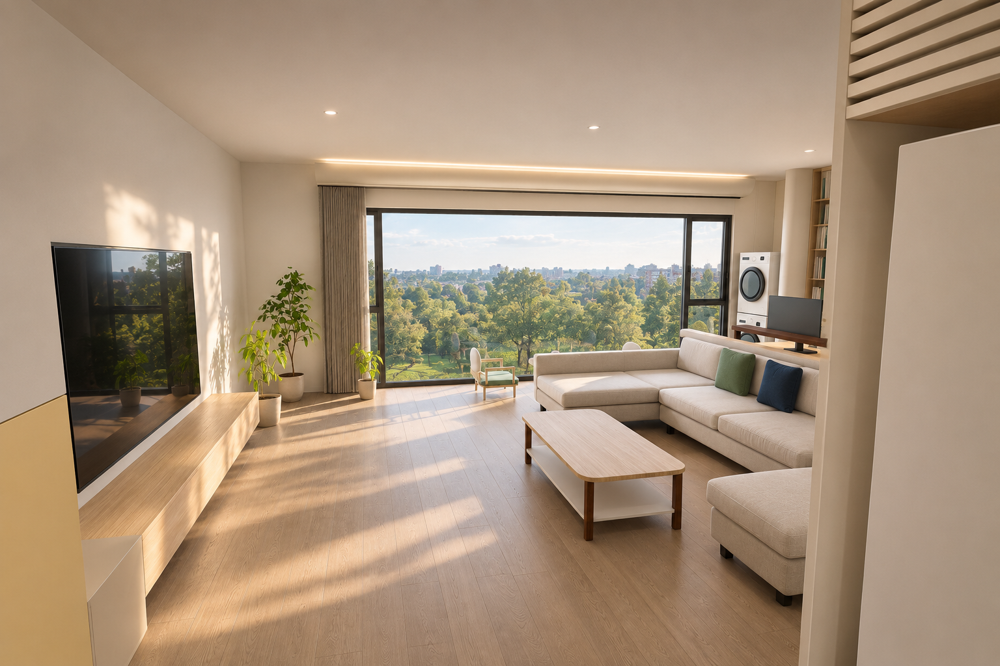
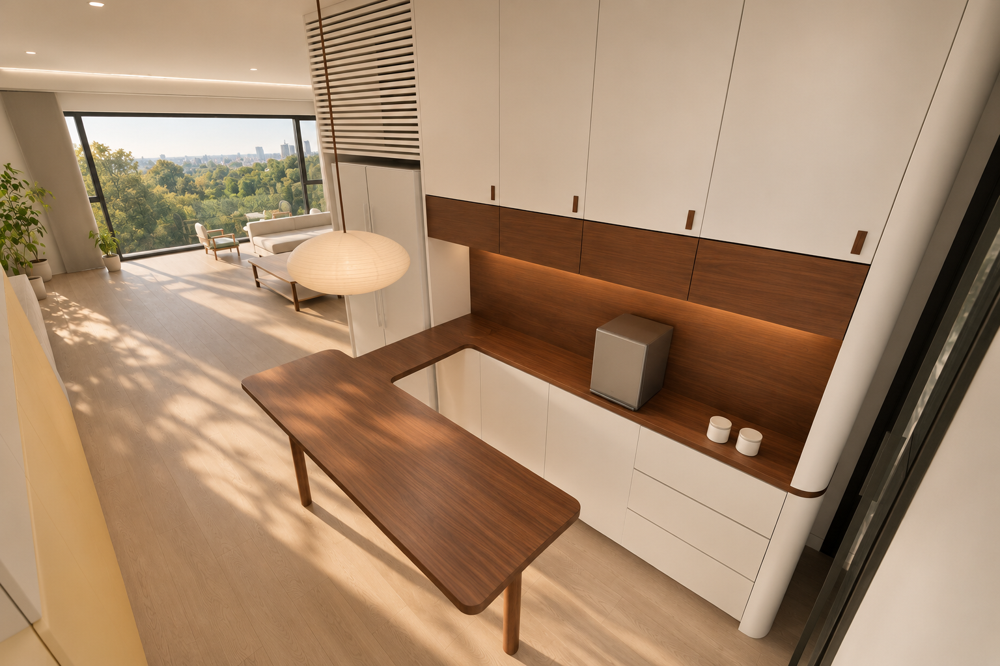
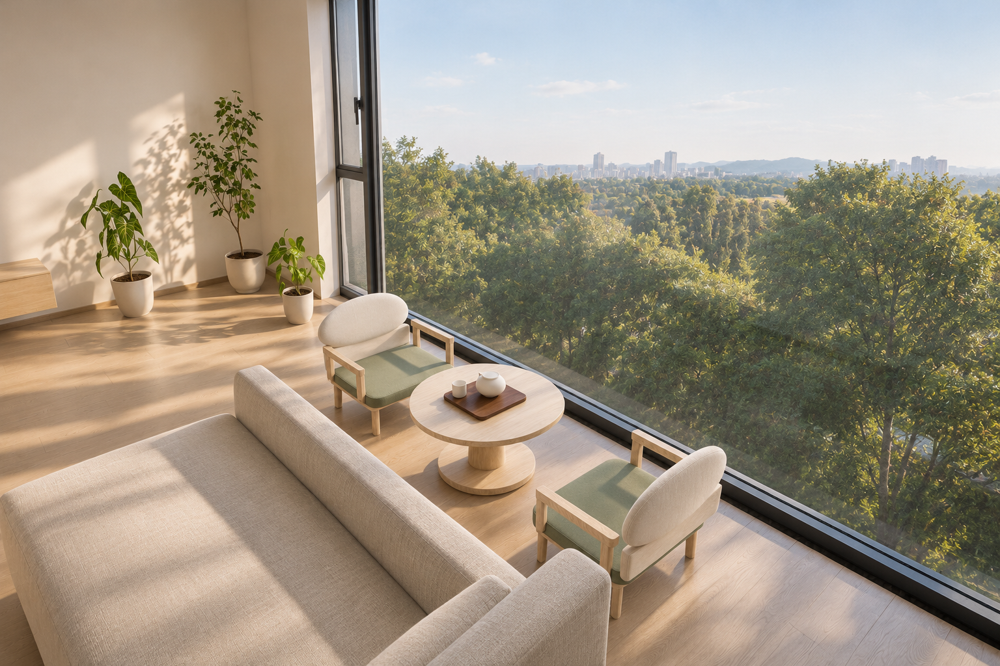
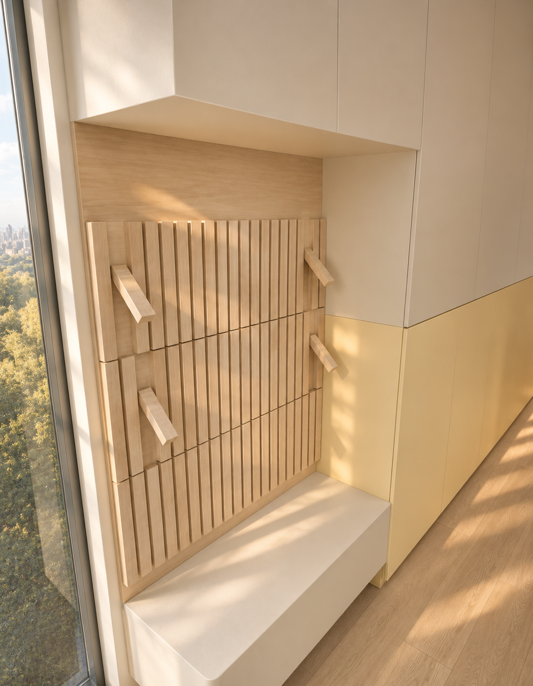
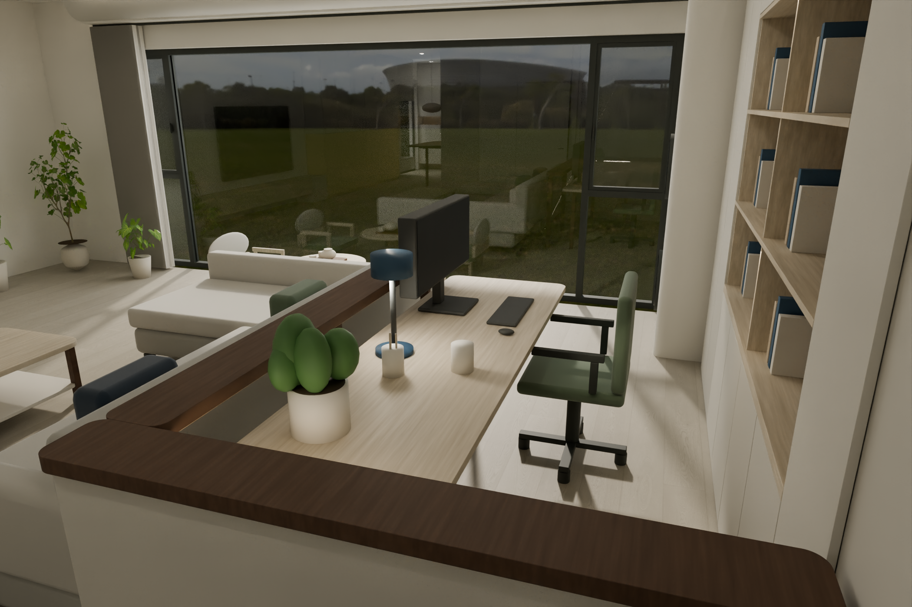
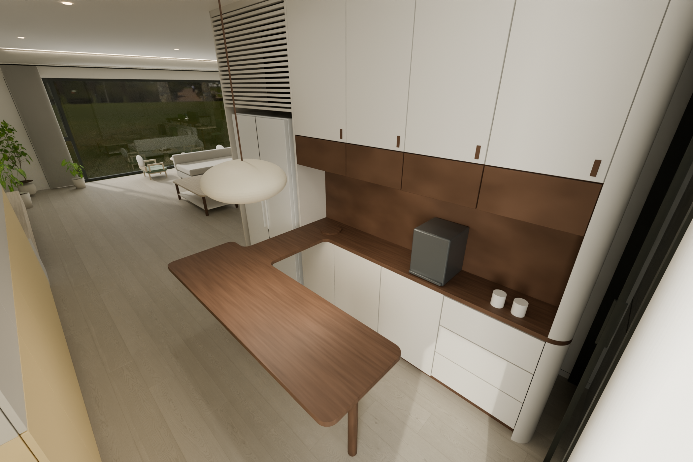
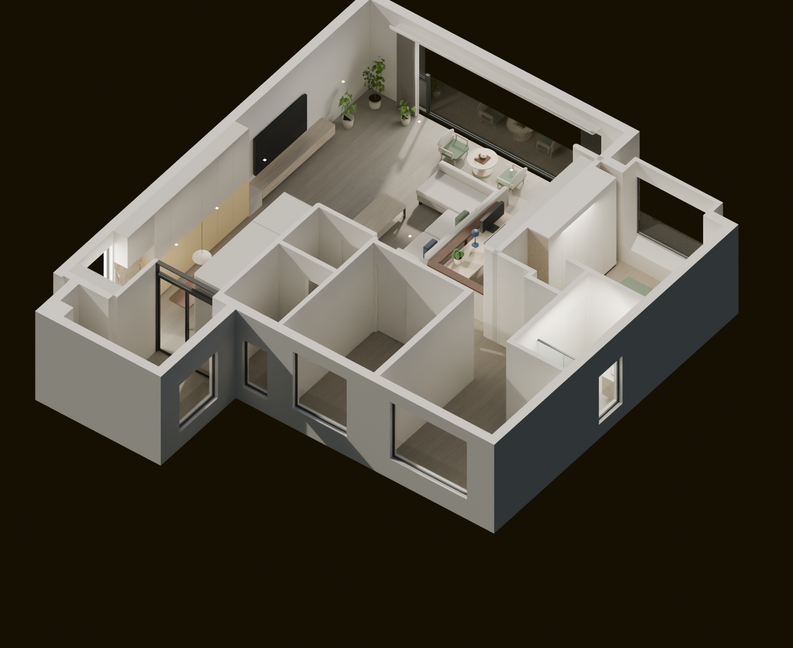

已完成餐边柜11与办公区02的实体整合，并同步交互模型、四区摄影感概念图和四点全景。办公材质先用B深木框景作临时预览，A浅木与C奶油仍保留；这不代表替你选定了材质。
这次完成已定形方案的整合。早先v20中的空调设备选型、构造节点、柜内容量细分、主卫门位及墙线等未完成事项继续单独跟踪，不以版本号声称全部深化完成。
暖白留白电视墙、浅木茶几与米灰沙发延续，深木高台勾出办公边界；近端有实体半墙，阳台端保持入口。

同版模型基础上的摄影感概念，非现场摄影。窗景、光影和细纹理为表现，尺寸以模型与现场为准。
冰箱位于客厅端、U形台面之外。置物区、连接臂与餐面统一胡桃木和880高，根部齐平，末端白柜用柔和圆边收住。

低圆茶桌与两把低茶椅沿窗相对，绿植延续至电视侧。办公区的阳台端入口没有新增横台或端柜。

钢琴键挂区、换鞋凳、通顶鞋柜与奶黄通长柜继续沿用，入口到新餐岛的连续关系在同版全景中查看。


同版原生模型：近端半墙接右书柜，阳台端敞开。

同版原生模型：U形、白冰箱、齐平根部与圆端柜。
办公椅后约408仍紧；餐岛外空场约732、厨房端约673，均不等于就座后净距。餐椅本轮不排。所有新增尺寸、板厚、五金、承重与机电条件仍需深化和现场核对。

这是观察副本。正式主模型保留完整62墙、12玻璃及原有顶面。
按本轮要求，之后完成的设计默认同步到主模型，保留旧版本和变更记录。尚未定形的多方案先标明候选；如你另行要求仅做独立研究，则以那次要求为准。
当前可移动模型与全景已为同一几何版本。家具移动后，已烘焙全景不会自动变化；需按新位置重新生成。